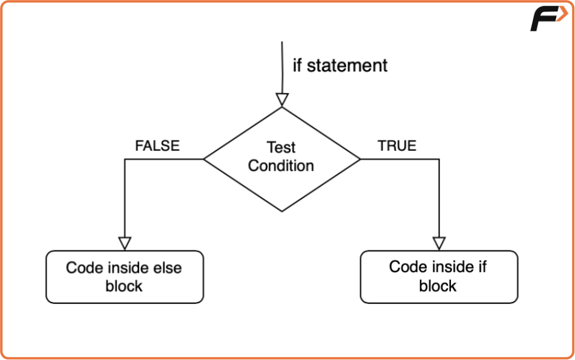
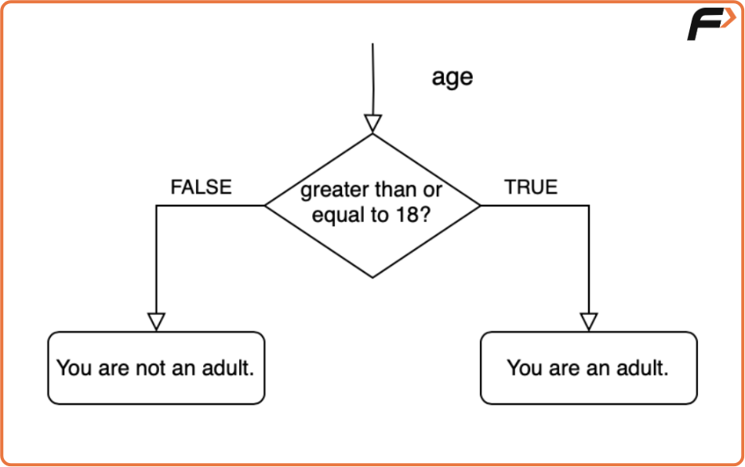
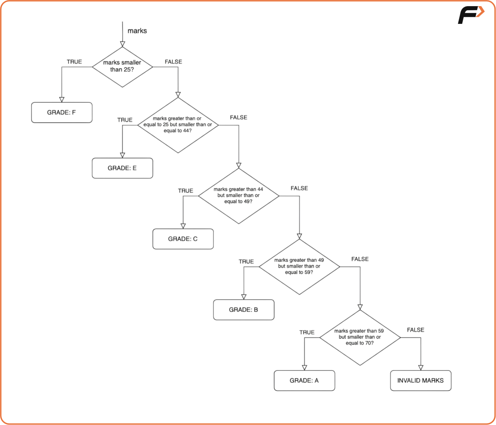

If-Else Statements
Conditional statements are a fundamental concept in programming that allows you to make decisions based on certain conditions. These statements enable your code to execute different blocks of code depending on whether specific conditions are met or not. In this blog post, we'll delve into the basics of conditional statements, starting with the ubiquitous if-else statement and gradually exploring more complex scenarios.
The `if-else` Statement

'if statement' is used to execute a block of code only if a certain condition is met. It allows us to conditionally execute code based on whether the specified condition is true.
'else statement', on the other hand, is an optional companion to the if statement. It specifies what code to execute if the condition in the if statement is not met (i.e. if it is false).
Let's break down the flow of control:
- If the test condition in the if statement is true, a block of code inside the if block will be executed.
- If the test condition is false, the code inside the else block (if present) will be executed.
Code:
#include<bits/stdc++.h>
using namespace std;
int main() {
// Declare a variable to store the user's age
int age;
// Ask the user to enter their age
cout << "Enter your age: ";
cin >> age; // Take input from the user
// Check if the user is 18 or older
if (age >= 18) {
// If true, print that the user is an adult
cout << "You are an adult." << endl;
} else {
// Otherwise, print that the user is not an adult
cout << "You are not an adult." << endl;
}
return 0; // End of program
}

In this example, we take the user's age as input and use an if statement to check if the age is greater than or equal to 18. If the condition is true, it prints "You are an adult," and if it's false ie. the 'else' condition is satisfied, it prints "You are not an adult."
Simplifying Code with "else if"
As your code becomes more complex, you'll often encounter scenarios where you need to check multiple conditions. Instead of writing multiple independent if statements, you can streamline your code using else if statements.
Let's say we want to grade students based on their marks within specific ranges:
Code:
#include <iostream>
using namespace std;
int main() {
// Declare and initialize marks variable
int marks = 54;
// Check grade conditions using if-else ladder
if (marks < 25) {
cout << "Grade: F" << endl; // Less than 25 is Grade F
} else if (marks >= 25 && marks <= 44) {
cout << "Grade: E" << endl; // Between 25 and 44 is Grade E
} else if (marks >= 45 && marks <= 49) {
cout << "Grade: D" << endl; // Between 45 and 49 is Grade D
} else if (marks >= 50 && marks <= 59) {
cout << "Grade: C" << endl; // Between 50 and 59 is Grade C
} else if (marks >= 60 && marks <= 69) {
cout << "Grade: B" << endl; // Between 60 and 69 is Grade B
} else if (marks >= 70) {
cout << "Grade: A" << endl; // 70 and above is Grade A
} else {
cout << "Invalid marks entered." << endl; // Handles unexpected cases
}
return 0;
}

- If marks are less than 25, it prints "Grade: F."
- If marks are between 25 and 44 (inclusive), it prints "Grade: E."
- If marks are between 45 and 49 (inclusive), it prints "Grade: D."
- If marks are between 50 and 59 (inclusive), it prints "Grade: C."
- If marks are between 60 and 69 (inclusive), it prints "Grade: B."
- If marks are 70 or higher, it prints "Grade: A."
- If marks are outside the valid range, it prints "Invalid marks entered."
The provided code for grading based on marks is functional, but it can be simplified for better readability and maintainability. In the current code, there are several redundant comparisons of marks with specific values. For example, when checking for grades E, C, B, and A, you have to repeatedly check marks >= X && marks <= Y, which can be error-prone and hard to maintain as the grade ranges change.
We can refactor the code, we can remove the lower bounds and check only the upper bounds for each grade as the code flow is such that we move along the conditions only after satisfying the previous one.